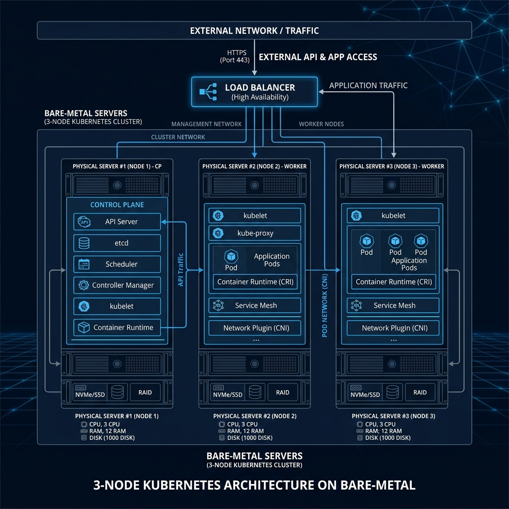
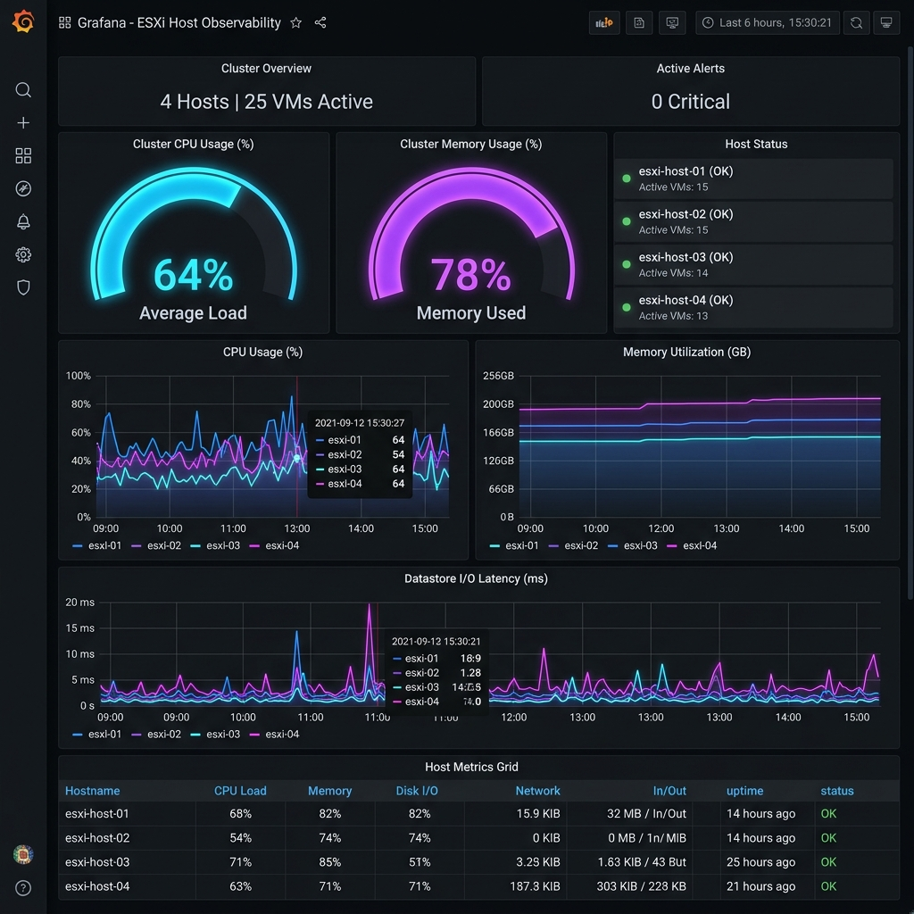
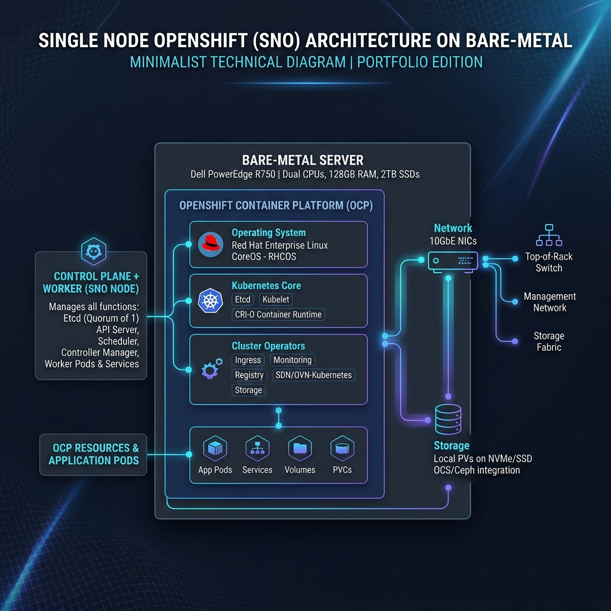
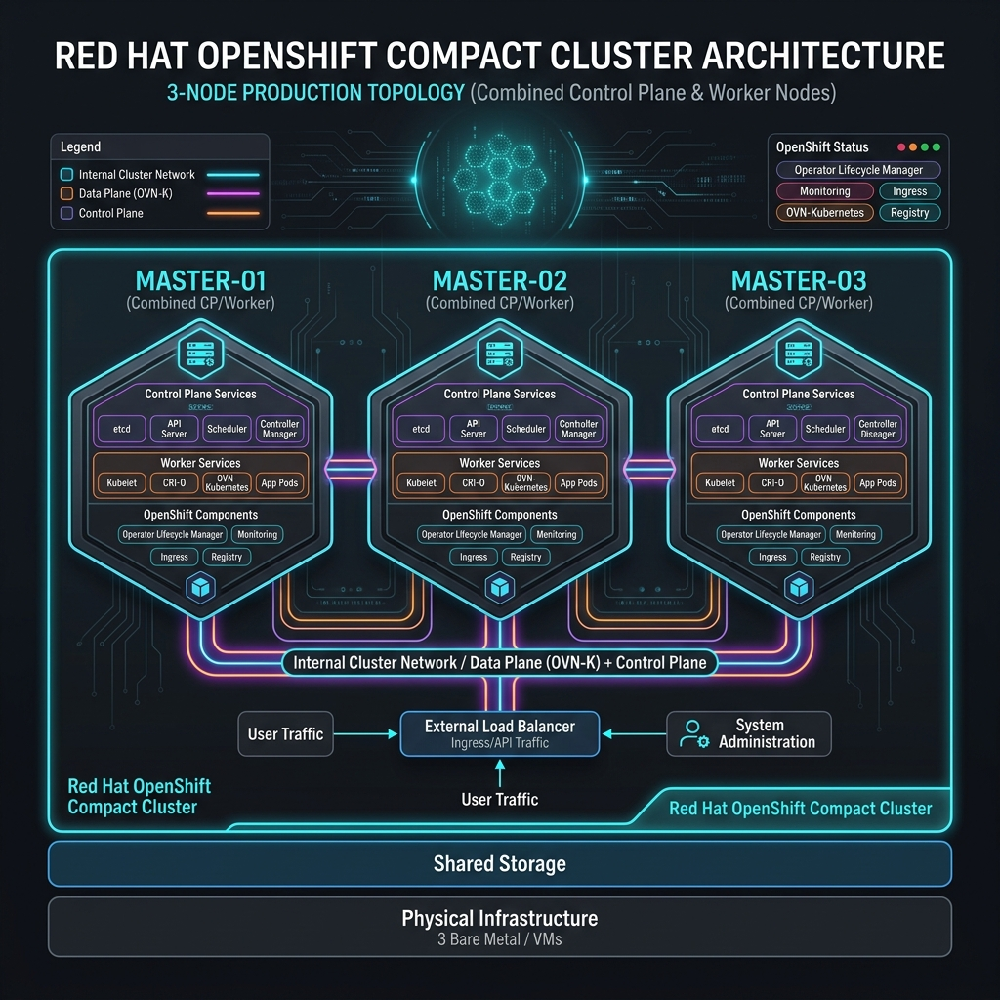

Highly Available Kubernetes Infrastructure
Automated provisioning of a 3-node Kubernetes cluster. Built using Terraform and Ansible to ensure rapid, repeatable, and scalable deployments across diverse environments.
View RepositoryI am driven by the challenge of evolving traditional telecommunications into scalable, cloud-native environments. Having started my career integrating 5G and LTE networks, I saw the bottlenecks of manual configuration firsthand. This motivated me to pivot into DevOps, where I now architect bare-metal Kubernetes platforms and AI-ready infrastructure to eliminate inefficiencies through automation. I am targeting roles in Munich to bring my decade of experience in telecom clouds to a forward-thinking engineering team in a major tech hub.
Deploying and managing Red Hat OpenShift (OCP 4.x) and Kubernetes on bare-metal servers utilizing IPI/UPI and Single Node OpenShift (SNO) strategies.
Commissioning massive AI GPU clusters (NVIDIA H100, GH200) and integrating GenAI observability stacks. NVIDIA NCA-AIIO Certified.
Automating hardware provisioning and configuration management using Terraform, Ansible, Python, and Bash, reducing delivery times by up to 40%.
Optimizing CI/CD pipelines with GitLab CI and ArgoCD to streamline the migration of containerized applications and ensure zero-downtime deployments.

Automated provisioning of a 3-node Kubernetes cluster. Built using Terraform and Ansible to ensure rapid, repeatable, and scalable deployments across diverse environments.
View Repository
Designed and deployed an automated monitoring solution for ESXi hosts using Prometheus and Grafana, enabling proactive anomaly detection before system failures occur.
View Repository
Automated deployment of Single Node OpenShift (SNO) on bare-metal, optimizing footprint for edge computing and small-scale laboratory environments.
View Repository
Architecting and deploying a 3-node HA compact cluster, combining control-plane and worker-node functionalities to maximize resource efficiency.
View Repository